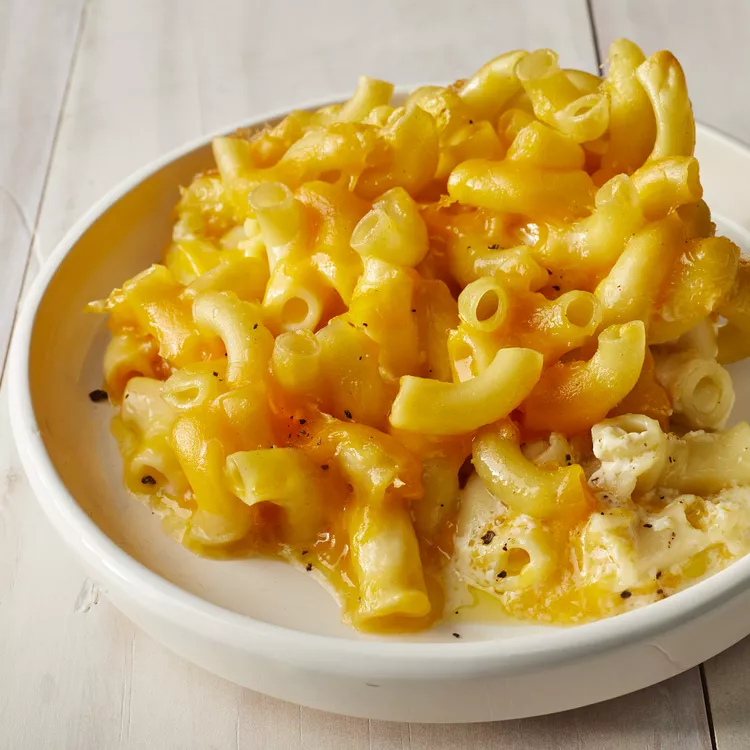

Baked Macaroni and Cheese

Description
This easy mac and cheese is baked in the oven for a quick meal. A friend of mine sent me this recipe when I got my first apartment because she knew I hated cooking! It's really easy — even I can make it — and it tastes great. I'm not sure where she found the recipe. (from https://www.allrecipes.com/recipe/14140/baked-macaroni-and-cheese/)
Ingredients
- 1 (12 ounce) package macaroni)
- 2 cups milk
- 1 egg
- 2 1/2 cups shredded Cheddar cheese
- 2 tablespoons butter, melted
- salt and pepper to taste
Steps
- Preheat the oven to 350 degrees F (175 degrees C). Lightly grease a 2-quart baking dish.
- Boil macaroni in a large pot of salted water until barely done, about 5 minutes. Drain and set aside.
- Whisk together milk and egg in a large bowl. Stir in cheese and butter.
- Place par-boiled macaroni in the prepared baking dish. Pour milk mixture over macaroni, season with salt and pepper, and stir until combined. Press mixture evenly into the baking dish.
- Bake, uncovered, in the preheated oven until top is browned, 30 to 40 minutes.